確認済み機能 12 / 28
01
入力補助
ID自動採番
入力時・自動
- B〜K列のいずれかに入力があり A列が空の行に、V-XXXX 形式（4桁連番）の IDを自動採番
- ScriptLock（ScriptApp.getLockService().getScriptLock()）による排他制御。複数端末・担当者が同時入力しても番号は重複しない
一括補完関数
- 採番漏れは
fillMissingIdsAndCars()が一括処理。A列が空の行を全件スキャンして採番→マスタ補完まで実行

02
入力補助
トン数正規化
入力時・自動
- D列（トン数）編集時に
normalizeTons_()を呼び出し、「4t」「4T」「4トン」「4.0t」「4.0」等を数値 4 に変換 - onEdit トリガー内で即時処理（GAS実行遅延の影響を受けない同期処理）
- CSV取込や多行貼り付けも対象。変換後にセルを上書き
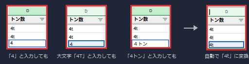
03
入力補助
車番自動補完
入力時・自動
- F列（車番）入力時、全角英数→半角変換後に自車専属マスタと照合し B〜I列（区分・会社名・トン数・車種・車番・乗務員名・携帯番号・看板名）を一括補完
- 照合は数字部分の完全一致方式。「101」→「大阪か101」にヒット。「1」は「101」にヒットしない
- 複数行への一括貼り付け・Ctrl+Enter 一括入力にも対応
スキップ条件
- B〜I列（F列以外）に 1つでも入力済みの行は補完しない（協力会社の同じ車番も手入力可能）
- マスタB列（運行状態）が「故障」「待機」の車両はスキップ
一括補完関数
fillMissingIdsAndCars()で補完漏れを一括修正
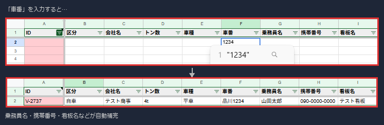
04
入力補助
車種 全角→半角・大文字統一変換
入力時・自動
- E列（車種）の直接編集時に即時変換、F列（車番）補完ループ終了後にも一括変換
- 全角アルファベット（Ａ-Ｚ, ａ-ｚ）→半角変換 → さらに大文字に統一してセルに書き戻す
- F列補完経由でE列に書き込まれたマスタ値も対象（補完後に全行スキャン方式）
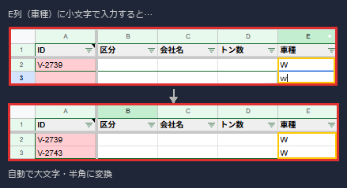
05
入力補助
時刻の正規化と日付合成
入力時・自動
- 対象列：N〜R列（誘導・積完・休憩開始・休憩終了・降完）＋ 点呼前後完了列。編集時に即時処理
- 全角コロン「：」・全角数字（１２：３０等）→ 半角変換
- 時刻のみ入力（HH:mm）→ J列の日付と合成して DateTime 型で保存
- GASの内部時刻型（1899年起点）で届いた値も J列日付と合成して正しく保存
- 月日付き入力（M/d H:mm）はそちらを優先
変換しない条件
- 「19：40ｌ」のように数字以外の文字が含まれている場合は変換せず、そのまま保存
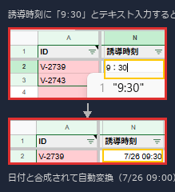
06
入力補助
車番 全角→半角自動変換
入力時・自動
- F列（車番）編集時、全角英数を半角変換してセルに書き戻す
- マスタ側の車番が全角でも同様に正規化して照合。数字部分の完全一致で判定
- 補完時もマスタ値を半角正規化した値で F列上書き
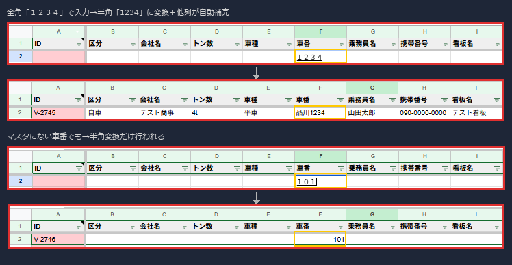
07
自動計算
書式自動設定
入力時・自動
- S〜V列（売上・請求高速・実費高速・合計高速）に
#,##0;[RED]#,##0を自動適用 - N〜R列・点呼前後列に
M/d HH:mmの時刻書式を自動適用 - 対象列を含む範囲が編集されたとき崩れた書式を自動修復（onEdit 内）
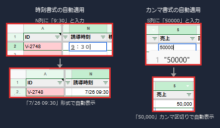
08
自動計算
請求高速 → 実費高速 コピー
🟠 オレンジ文字
入力時・自動
- T列（請求高速, col20）入力時、U列（実費高速, col21）が空ならフォント
#E65100（オレンジ）で同値をコピー - U列（editedCol===21）編集時：値が空 → T列を再コピー（オレンジ）、値あり → フォントを
null（黒）に戻す
運用ルール（コメント必須）
- 実費が本当に0円の場合は「0」を明示入力すること。空欄は「未入力」として扱われ T列の値が再コピーされる
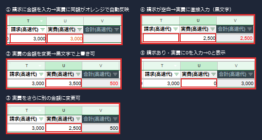
09
自動計算
合計高速代 数式自動セット
入力時・自動
- T列またはU列の編集時、V列（col22）に数式がなければ
=IF(T{r}=U{r},"",T{r}-U{r})を自動セット - 書式：
#,##0;[RED]#,##0。プラス=黒字、マイナス=赤字
保護・自動復元
- V列を直接編集（Delete含む）すると即座に数式を復元し「合計高速は自動計算列です」トーストを表示して return
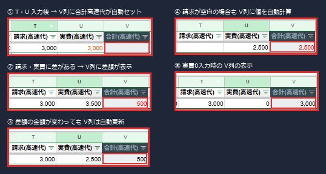
10
自動計算
日付変更時の自動ソート
入力時・自動
- J列（col10）の編集時に
sortUnkouByDate_()とsortSummaryByDate_()を呼び出す - ソート前に背景色・リッチテキスト値（col24・col26）を一括取得し、ソート後の行順で復元
- ソート後 V列の数式を全行
=IF(T=U,"",T-U)で再セット。数値書式・日付書式も再適用
手動実行
sortBothSheetsByDate()— メニュー「🔃 日付順並び替え」
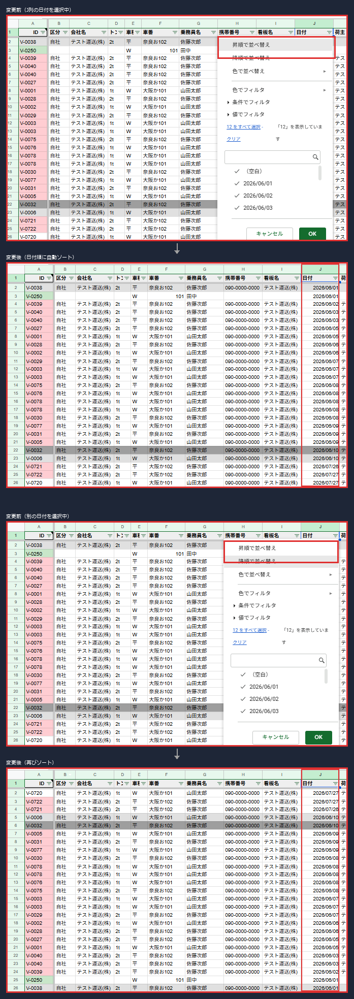
29
入力補助
日付への現在時刻付与
入力時・自動
- J列（日付）編集時、全角・スペース混じりの文字列（「７/２６」「7 / 26」等）を半角正規化し今年の日付として保存
- SS上の表示は日付のみ（yyyy/MM/dd）。内部には現在時刻が付与されて保存される
- 時刻なし（00:00:00）で保存されている場合も現在時刻を付与して上書き
- アプリの一覧では日付＋時刻（例：7/26 14:35）で表示される
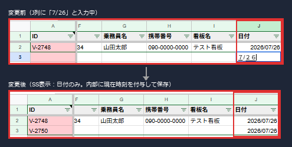
11
色表示
有休・休み行の色付け
入力時・自動
- L列（積地）に「有休」を含む値を入力すると行全体が薄グレー（#e0e0e0）に即時着色される
- L列（積地）に「休み」を含む値を入力すると行全体が濃グレー（#9e9e9e）に即時着色される
SS起動時・自動
- SS開き直し（F5）のたびに全行を再チェックして自動再適用される
優先順位
- 有休・休み行のグレーは資格期限アラートの色（赤・青・緑）より優先される。期限色はグレー行には上書きされない
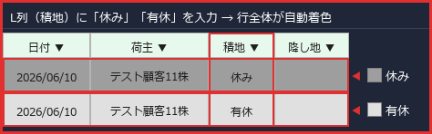
今後の対応予定（未確認）
16 件
12
色表示
配車漏れ警告色
薄黄
13
色表示
資格期限アラート色（A列）
赤/青/緑
14
色表示
ID重複・車番不一致の警告
🔴 濃い赤
15
色表示
保護列の色
薄青グレー
16
色表示
色凡例メモの自動設定
17
警告・保護
時刻入力の順序チェック
18
警告・保護
ヘッダー行の自動復元
19
ID・車番の一括補完（手動）
20
手動の日付順並び替え
21
今月分の行一括生成
22
翌月分の行一括生成
23
前月分アーカイブ
24
帳票・送信
車番連絡のメール送信
25
帳票・送信
ファイル添付
26
データ取込
配車表CSV/Excelの取込
27
インフラ
onEdit処理の高速化